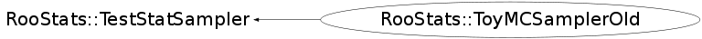

class RooStats::ToyMCSamplerOld: public RooStats::TestStatSampler
ToyMCSamplerOld is a simple implementation of the TestStatSampler interface. It generates Toy Monte Carlo for a given parameter point, and evaluates a test statistic that the user specifies (passed via the RooStats::TestStatistic interface). Development notes: We need to provide a nice way for the user to:
- specify the number of toy experiments (needed to probe a given confidence level)
- specify if the number of events per toy experiment should be fixed (conditioning) or floating (unconditional)
- specify if any auxiliary observations should be fixed (conditioning) or floating (unconditional)
- specify if nuisance paramters should be part of the toy MC: eg: integrated out (Bayesian marginalization)
Function Members (Methods)
public:
Data Members
private:
| Int_t | fCounter | counter for naming sampling dist objects |
| const char* | fDataName | name of data set in workspace |
| Bool_t | fExtended | if nEvents should fluctuate |
| RooDataSet* | fLastDataSet | work around for memory issues in nllvar->setData(data, noclone) |
| Int_t | fNevents | number of events per toy (may be ignored depending on settings) |
| Int_t | fNtoys | number of toys to generate |
| const RooArgSet* | fNuisParams | RooArgSet specifying nuisance parameters for interval |
| RooArgSet* | fNullPOI | the values of parameters used when evaluating test statistic |
| const RooArgSet* | fObservables | RooArgSet specifying the observables in the dataset (needed to evaluate the test statistic) |
| Bool_t | fOwnsWorkspace | flag if this object owns its workspace |
| const char* | fPdfName | name of common PDF in workspace |
| TRandom* | fRand | random generator |
| string | fSamplingDistName | name of the model |
| Double_t | fSize | |
| RooStats::TestStatistic* | fTestStat | pointer to the test statistic that is being sampled |
| TString | fVarName | name of test statistic |
| RooWorkspace* | fWS | a workspace that owns all the components to be used by the calculator |
Class Charts
{kind=link}
{kind=link}
{kind=link}
{kind=link}

Function documentation
ToyMCSamplerOld(TestStatistic &ts)
virtual ~ToyMCSamplerOld()
SamplingDistribution* AppendSamplingDistribution(RooArgSet& allParameters, RooStats::SamplingDistribution* last, Int_t additionalMC)
Extended interface to append to sampling distribution more samples
SamplingDistribution* GetSamplingDistribution(RooArgSet& allParameters)
Main interface to get a SamplingDistribution
RooAbsData* GenerateToyData(RooArgSet& allParameters) const
This method generates a toy dataset for the given parameter point.
Double_t EvaluateTestStatistic(RooAbsData& data, RooArgSet& allParameters)
Main interface to evaluate the test statistic on a dataset
void SetNEventsPerToy(const Int_t nevents)
void SetExtended(const Bool_t isExtended)
void SetData(const char* name)
specify the name of the dataset in the workspace to be used
{fDataName = name;}void SetPdf(const char* name)
specify the name of the PDF in the workspace to be used
{fPdfName = name;}void SetPriorNuisance(RooAbsPdf* )
How to randomize the prior. Set to NULL to deactivate randomization.
{}void SetParametersForTestStat(const RooArgSet& nullpoi)
specify the values of parameters used when evaluating test statistic
void SetNuisanceParameters(const RooArgSet& set)
specify the nuisance parameters (eg. the rest of the parameters)
{fNuisParams = &set;}void SetObservables(const RooArgSet& set)
specify the observables in the dataset (needed to evaluate the test statistic)
{fObservables = &set;}void SetTestSize(Double_t size)
set the size of the test (rate of Type I error) ( Eg. 0.05 for a 95% Confidence Interval)
{fSize = size;}void SetConfidenceLevel(Double_t cl)
set the confidence level for the interval (eg. 0.95 for a 95% Confidence Interval)
{fSize = 1.-cl;}void SetTestStatistic(RooStats::TestStatistic* testStat)
Set the TestStatistic (want the argument to be a function of the data & parameter points
void SetSamplingDistName(const char* name)
Set the name of the sampling distribution used for plotting
{ if(name) fSamplingDistName = name; }